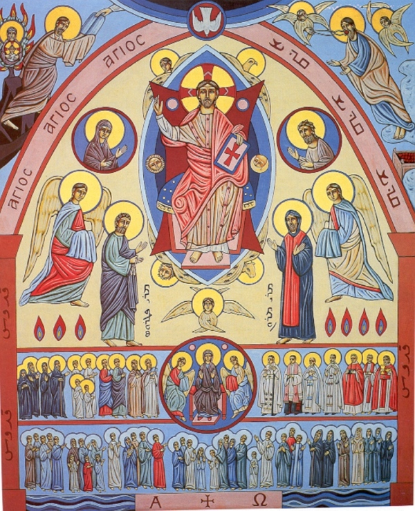
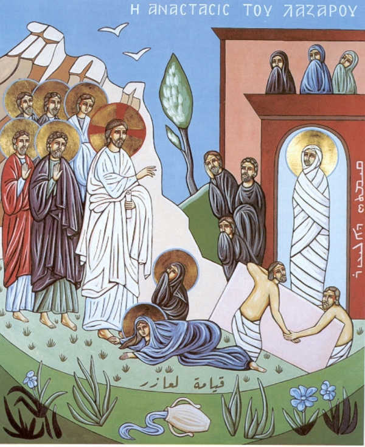

Capela Virtual São Marun
▶
Qurbono
Divina Liturgia e menus associados
Qurbono
Liturgia Eucarística e Anáforas
▶
Oração das Horas
Menu principal · Horas canônicas
Oração das Horas
Menu principal
Oração do Dia
Horas canônicas (visual)
▶
Por data
Navegação por datas
Liturgia do Dia
Liturgia Eucarística
Leituras Bíblicas
Referências do dia
Synaxarion
Comemoração do dia
▶
Calendário e Patrística
Acesso a módulos independentes
Calendário Litúrgico
Anos e navegação
Patrística Siríaca
Autores e obras
▶
Ordinário
Seções por tempo litúrgico
Ordinário
Estrutura completa
▶
Coleções e Comuns
Acesse e navegue pelos botões internos

Comum dos Santos
Fluxo retrato · categorias internas

Biblioteca
Tempos e coleções